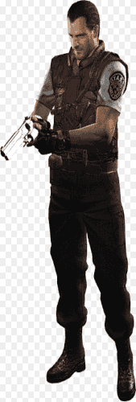
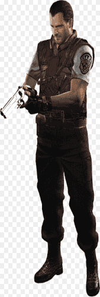

Introdução
Em 1996, os videogames entraram em uma nova era de terror. Com o lançamento de Resident Evil, a desenvolvedora japonesa Capcom não apenas apresentou ao mundo um jogo inovador, mas também ajudou a consolidar um novo gênero: o survival horror. O título, conhecido como Biohazard no Japão, misturava ação, suspense, exploração e horror psicológico em doses nunca antes vistas. Mas como tudo começou? A Criação de Resident Evil A mente por trás da criação de Resident Evil é Shinji Mikami, um jovem designer da Capcom que buscava inspiração em filmes clássicos de zumbi, especialmente os dirigidos por George A. Romero, como Night of the Living Dead (1968). Mikami também se baseou em um jogo anterior da própria Capcom chamado Sweet Home (1989), considerado um precursor espiritual da franquia. A ideia era simples, mas ousada para a época: colocar o jogador em um ambiente fechado, sombrio e hostil, onde munição e suprimentos são escassos, e o maior desafio é sobreviver.

O Jogo Original (1996)
O primeiro Resident Evil se passa nos arredores da fictícia Raccoon City, onde a equipe especial S.T.A.R.S. investiga estranhos assassinatos. Após um incidente nos arredores de uma floresta, os membros do esquadrão buscam abrigo em uma mansão aparentemente abandonada — o que descobrem lá é muito mais assustador do que imaginavam. Criaturas deformadas, zumbis, armadilhas mortais e segredos científicos estão espalhados pelos corredores. Tudo isso causado por experimentos ilegais da Umbrella Corporation, responsável pela criação do Vírus T, capaz de transformar humanos em monstros. O jogo apresenta dois protagonistas jogáveis — Jill Valentine e Chris Redfield — e dá ao jogador escolhas que afetam o desenrolar da história, algo revolucionário para a época. A Revolução do Survival Horror Resident Evil foi pioneiro ao combinar: Câmeras fixas que aumentavam a tensão Quebra-cabeças complexos Limitação de recursos, forçando o jogador a pensar estrategicamente Atmosfera cinematográfica, com trilha sonora imersiva e sustos bem colocados Esses elementos definiram o que viria a ser conhecido como "serviçal horror", inspirando dezenas de outros jogos e influenciando a cultura gamer por décadas.

 


Evolução e Legado
Desde seu lançamento, a franquia Resident Evil cresceu exponencialmente. Foram mais de 140 milhões de cópias vendidas até hoje, tornando-se a série de maior sucesso da Capcom. Entre os marcos da saga estão: Resident Evil 2 (1998): Introduziu novos personagens e expandiu a narrativa Resident Evil 4 (2005): Revolucionou o gameplay com câmera sobre o ombro e foco em ação Resident Evil 7 (2017): Renovou a franquia com terror em primeira pessoa Remakes modernos: Títulos como Resident Evil 2 Remake (2019) e Resident Evil 4 Remake (2023) trouxeram o clássico de volta à nova geração com gráficos e mecânicas atualizadas Além dos jogos, a série foi adaptada para: Filmes live-action (com Milla Jovovich) Séries animadas HQs, livros e mangás Atrações em parques temáticos Conclusão Mais do que uma série de jogos, Resident Evil é um fenômeno cultural. Sua mistura de horror, narrativa envolvente e inovação constante garantiu um lugar especial na história dos games. De mansões mal-assombradas a vilarejos europeus e instalações secretas da Umbrella, a saga continua evoluindo — e assustando — fãs ao redor do mundo.